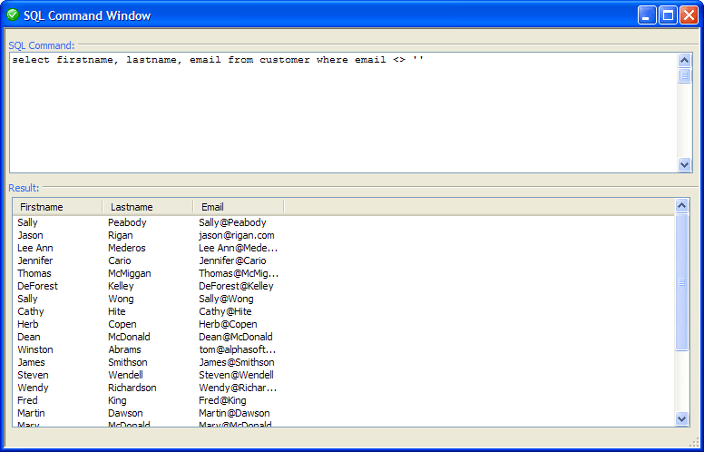

SQL Command Window
The SQL Command Window provides a mechanism for testing SQL statements. To open the SQL Command Window :
From the Control Panel, select Tools > External Databases > SQL Command Window.
From the <span class=Screen>Database Explorer</span> , select a back-end database listing, right click, and select Open SQ Command Window.

The SQL Command Window requires that you have defined one or more named connection strings.
Select a named connection string from the Connection list.
Select the SQL Type you wish to use. The options are:
"Portable" - use the multi-database Portable SQL dialect
"Native" - use the dialect specific to a database product
Enter SQL in the SQL Command window.
If you need to insert a table or column name into a SQL statement:
Click Insert... to display the <span class=Screen>Database Explorer</span>.
Select the item and click Insert.
Click
 Execute SQL to run the SQL statement.
Execute SQL to run the SQL statement.If the statement was a SELECT statement, you will see a sample of records in the Result window.
If the statement was an INPUT, DELETE, or UPDATE statement, you will see the number of affected rows reported in the Result window.
If you executed another type of SQL command, the Result window will show a success or failure message.
If the statement could not be processed by the back-end database (for example, because of invalid SQL syntax), you will see an error message in the Result window.
You may revert to previous versions of your SQL statement:
Click SQL History to display the <span class=Screen>SQL History</span> dialog.
Select a previous statement (from this session).
Click Select.
Click
 to clear the SQL Command window.
to clear the SQL Command window.Click to display the Connections dialog, where you can edit or create connection strings.
Limitations
See Also